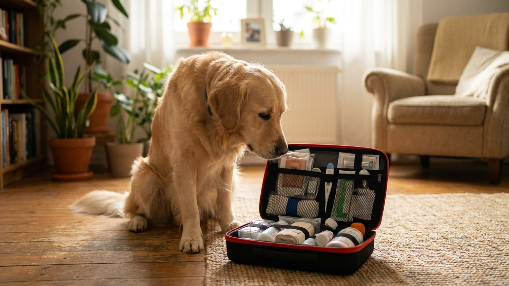

Аптечка для питомца дома: что должно быть в 2026 году

30 мая 2026 · 7 минут чтения · Здоровье · Безопасность · Кошки и собаки
Большинство хозяев не знают, что дать питомцу до приезда к ветеринару — и либо делают ничего, либо делают что-то опасное. Парацетамол от температуры кошке — смертельно. Вызвать рвоту при некоторых отравлениях — хуже, чем не вызывать. Хорошая аптечка и понимание того, что с ней делать, могут сохранить жизнь. Составляем список с нуля.
Базовый комплект: что должно быть у каждого хозяина
Антисептики и промывание:
- Хлоргексидин 0,05% — универсальный антисептик. Промывать раны, царапины, укусы, воспалённые глаза, уши. Не жжёт, не токсичен при наружном применении. Флакон 100-200 мл. Стоит 30-50 рублей.
- Физраствор (0,9% NaCl) — промывание глаз, носа, ран. Можно купить в аптеке флаконами по 200 мл или в индивидуальных ампулах. Стерильный, безопасный для любых полостей.
- Перекись водорода 3% — для остановки небольшого кровотечения, НО не для глубоких ран (замедляет заживление). Держите в аптечке, но используйте ограниченно.
Перевязочный материал:
- Стерильный бинт (2-3 штуки шириной 5 и 10 см).
- Марлевые салфетки стерильные (10x10 см, упаковка 10 штук).
- Самофиксирующийся эластичный бинт (Coban или аналог) — не прилипает к шерсти, удобен для перевязки лап.
- Хирургический лейкопластырь (не обычный «телесный» из аптеки — он плохо держится на шерсти).
- Ножницы с закруглёнными концами — срезать шерсть вокруг раны, разрезать бинт.
Измерение и введение:
- Электронный ректальный термометр — ректальная температура у кошек и собак измеряется ректально (норма для кошки 38,0-39,2°C, для собаки 37,5-39,5°C). Ушные термометры дают погрешность до 1°C у животных. Смазывайте вазелином перед измерением.
- Шприцы без иглы 1, 2 и 5 мл — дать лекарство через рот, промыть рану, ввести физраствор в ноздрю. Набор из 5-10 штук каждого размера.
- Резиновые перчатки (нитриловые) — работа с ранами, выделениями, токсичными веществами.
Сорбенты: дозы и когда применять
Сорбенты связывают токсины в кишечнике и выводят их. Применяются при подозрении на отравление, пищевые расстройства, поедание испорченной еды.
- Полисорб МП — порошок, разводится в воде. Доза для кошки: 0,5-1 г на кг массы тела, развести в 50-100 мл воды и дать через шприц без иглы или спринцовку. Доза для собаки: 1-2 г на кг массы тела. Давать не позднее чем через 1-2 часа после предполагаемого отравления.
- Энтеросгель — паста, проще давать. Кошке: 1/4 чайной ложки 2-3 раза в день. Собаке до 10 кг: 1/2 ч.л., 10-30 кг: 1 ч.л., свыше 30 кг: 1,5-2 ч.л. До еды, через 2 часа после лекарств.
- Активированный уголь — устаревший вариант, плохо работает у животных (маленькая доза в таблетках). Полисорб или Энтеросгель эффективнее. Если только уголь — доза для кошки 0,5-1 г на кг веса, для собаки 1-3 г на кг веса.
Важно: сорбенты — первая помощь, но не замена визиту к ветеринару при реальном отравлении.
Что НЕ давать питомцу — это критически важно
Это раздел, который нужно знать наизусть. Человеческие лекарства и животные — несовместимы в большинстве случаев.
- Парацетамол (ацетаминофен) — смертельно токсичен для кошек. Одна таблетка 500 мг убивает кошку. Вызывает разрушение эритроцитов, печёночную недостаточность, гибель в течение 24-72 часов. Для собак также токсичен, хотя летальная доза выше. Не давать никогда, никаких форм.
- Ибупрофен (нурофен, МИГ и аналоги) — токсичен для кошек и собак. Вызывает острые язвы желудка, почечную недостаточность. Даже одна таблетка 200 мг может вызвать острое поражение почек у кошки.
- Аспирин — кошки не метаболизируют его вообще. Токсичен и для собак в обычных человеческих дозах. Ветеринарное применение — редко, строго под контролем врача.
- Но-шпа (дротаверин) — в малых дозах применяется в ветеринарии, но самостоятельное назначение опасно: доза зависит от веса и состояния.
- Лоперамид (имодиум) — в некоторых породах (бордер-колли, австралийская овчарка и другие с мутацией MDR1/ABCB1) вызывает острое отравление и смерть.
- Противоблошиные капли для собак — кошке. Перметрин (активное вещество многих собачьих капель) смертельно токсичен для кошек. Всегда проверяйте, что препарат предназначен именно для вашего вида животного.
Пробиотики и вспомогательные препараты
- Пробиотик — FortiFlora (Purina), Enterol, Лактобифадол. Применяется при диарее, после курса антибиотиков, при стрессе. Для кошек и собак есть видоспецифичные формы — лучше использовать их. Давать 1-2 раза в день 5-10 дней.
- Вазелин — смазка для термометра, нанесение на сухие подушечки лап, размягчение корок на ранах.
- Физраствор в индивидуальных ампулах — промывание глаз при травме, посторонних предметах.
При отравлении: когда НЕ нужно вызывать рвоту
Вызвать рвоту при отравлении — интуитивный, но часто неправильный импульс. Вот когда это опасно:
- Если питомец без сознания или в судорогах — рвота при нарушенном рефлексе глотания приводит к аспирации (попаданию рвотных масс в лёгкие).
- Если выпита кислота, щёлочь, растворитель, нефтепродукты — повторное прохождение через пищевод вызывает дополнительный ожог.
- Если прошло более 2-3 часов — вещество уже всосалось, рвота не даст эффекта.
- Если это острые или режущие предметы — кости, кусочки металла, стекло.
- У кошек — вызвать рвоту в домашних условиях вообще крайне сложно. Средства, работающие у собак (перекись водорода), у кошек неэффективны и опасны.
В домашних условиях вызвать рвоту у собаки можно перекисью водорода 3% в дозе 1-2 мл на кг веса через шприц (не более 45 мл суммарно). Это работает только в первые 30-60 минут после поедания яда и только при отсутствии противопоказаний выше. При любых сомнениях — позвоните в круглосуточную клинику или vet-AI до действия.
Важные контакты: что держать под рукой
Аптечка без контактов — половина работы. Запишите заранее:
- Ближайшая круглосуточная ветеринарная клиника — адрес и телефон. Найдите прямо сейчас, пока всё хорошо. В экстренной ситуации искать некогда.
- Vet-AI 24/7 — AnimaLife в Telegram: @animalifebot. Первичная оценка симптомов в любое время суток.
- Номер чипа питомца — запишите в аптечку. При экстренной госпитализации или потере в панике номер чипа легко забыть. Также сохраните в телефоне.
- Ветеринарный паспорт — идеально хранить в одном месте с аптечкой или знать, где он лежит.
- Ветеринарный токсикологический центр (если есть в регионе) — в Москве работает «Ветеринарный центр токсикологии» при ряде клиник, телефон лучше уточнить заранее на сайте выбранной клиники.
Обновление аптечки: раз в полгода
Это не формальность. Препараты с истёкшим сроком годности могут не работать или быть токсичны. Хлоргексидин после вскрытия — 1 месяц. Физраствор в открытом флаконе — 24 часа (используйте ампулы). Шприцы без иглы — бессрочно в упаковке.
Алгоритм ревизии:
- Проверить сроки годности всех препаратов. Просроченное — выбросить.
- Восполнить потраченное.
- Проверить контакты клиники — телефоны меняются.
- Убедиться, что все члены семьи знают, где аптечка.
- Обновить информацию о питомце (вес меняется — пересчитать дозы сорбентов).
Хорошее время для ревизии — раз в полгода, совместить с сезонным визитом к ветеринару. Весна и осень — логичные точки.
← Все статьи · Открыть AnimaLife в Telegram · RSS